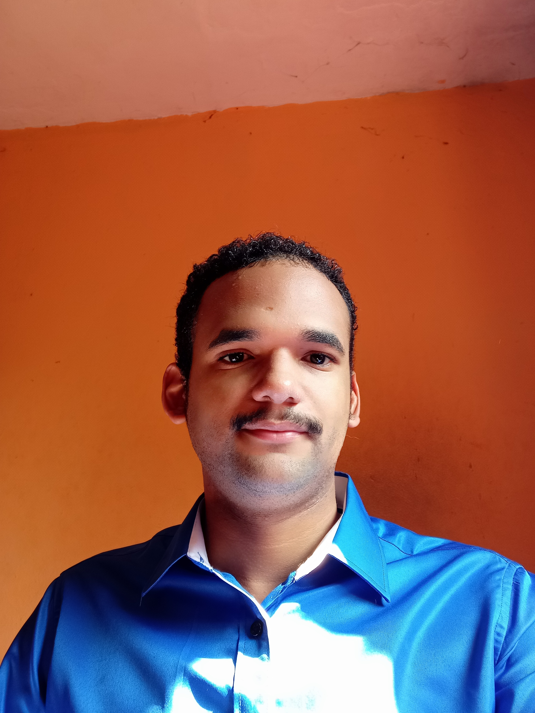

Projetos
LinkedIn
Blog da Trybe
Foto
Hard Skills
Soft Skills

Sobre Mim
Meu nome é Rafael Silva Soares, sou de São Paulo - SP.
Gosto de tecnologia desde quando ganhei meu primeiro computador.
Hoje, me dedico a aprender como a tecnologia funciona para assim
poder usá-la para contribuir positivamente com a sociedade.
Hard Skills:
- Redes de Computadores
- C++
- Linux
- GIT
- HTML
Soft Skills:
- AutoGestão
- Empátia
- Pró-Atividade